s'Läbä in Kabul
geschrieben am Tuesday, February 19, 2013
s'Erschte wo eim als Schwizer in Kabul uffallt isch wie viels um Sicherheit goht. Teilwis sind sogar schlechti Hüser mit Stacheldraht umgäh. Vor allem i üsem Distrikt ("Bonzegägänd" = Schwizer Unterschicht) sind sehr viel Hüser starch abgsicheret. D'Lüt vo dä Organisation wonich däbi bin händ alli kei Stacheldroht (zum Glück), aber 3m grossi Muure sind glich normal.
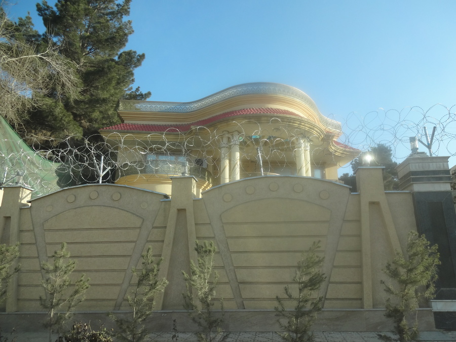So gits viel sehr "neu" ussehendi Hüser wo eifach Meterhohi Muure mit Stacheldroht händ. D'Hüser selber sind aber würkli nüt guets inädra, au wenns guet usgsehnd. Die Hüser händ eifach ä schöni Fassade, aber kei rechti Isolation und vo mehrfachverglasig ganz zschwiege. Ich wür glaub so ziemli mit jedere Wohnig tusche i dä Schwiz, selbst bim obige Huus.
Grad i minere nöchi isch di usbekisch? Botschaft. Ich krieg leider nid viel bewaffneti Wächter vord Kamera, wils das nid gern händ. Aber grundsätzlich hed sogar dä grösser Supermarkt (grössi = chline Migros) 2 bewaffneti Wächter mit gladne Sturmgwehr. Isch total normal das Lüt miteme Sturmgwehr uf dä Schultere umälaufed.
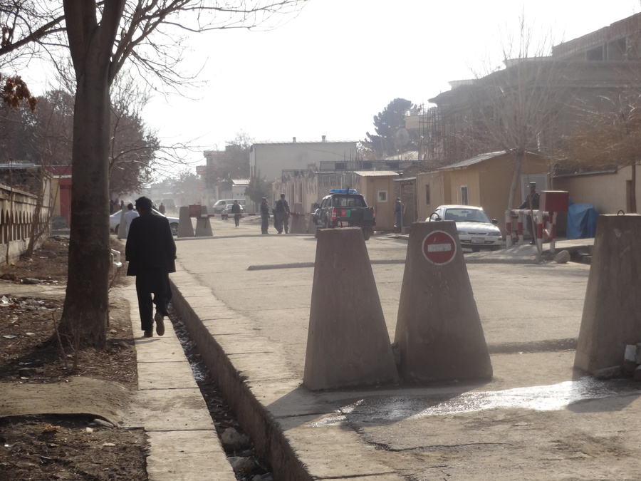Wohnä
Vo Pactec isch mir ä chlises Appartment zur Verfüegig gstellt worde. Das stoht ufeme Compound (ummureds Grundstück mit mehrere Wohnalage) wo zwei Familie und und än chline Abau stoht. Uf somne Compound gits meistens au än Brunne (flüssend Wasser) und irgendäs Gülleloch, woni aber nonid gfunde ha.
sHuus wär das:
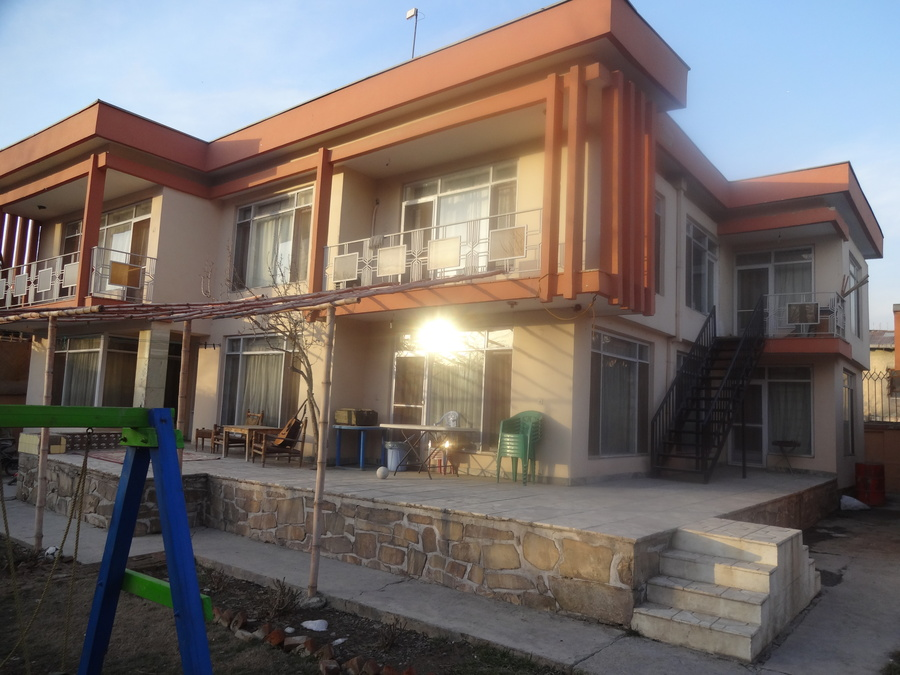Und min Abau gseht so us:
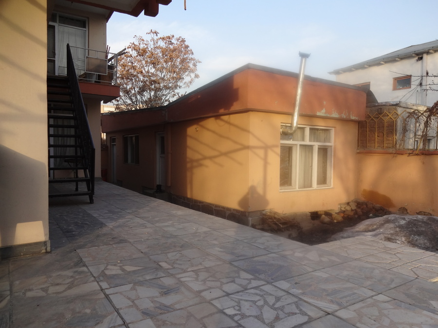Das isch ganz ok und scho fasch wieder zgross für mich. Brücht das eigentlich würkli nid. Wie ihr au gsehnd isch dChuchi/Stube recht gmüetlich:
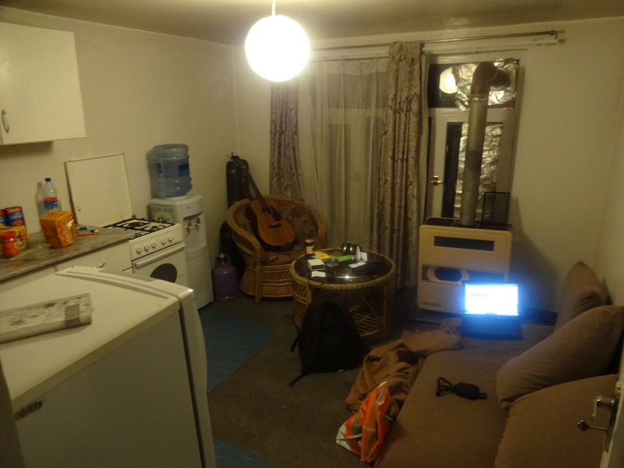Leider isch sganze aber sehr schlecht isoliert und ich mue extra dä Kerosin-Ofe aschmeisse. sProblem isch nur das dä im Schlofzimmer nix bringt. Drum hani im Schlofzimmer öppe Temperature vo 2-4° Celcius i dä Nacht. Darum schlofi mit zwei Deckene und 4 Schichte Chleider obe, sowie 2 Schichte unä und zwei Socke:
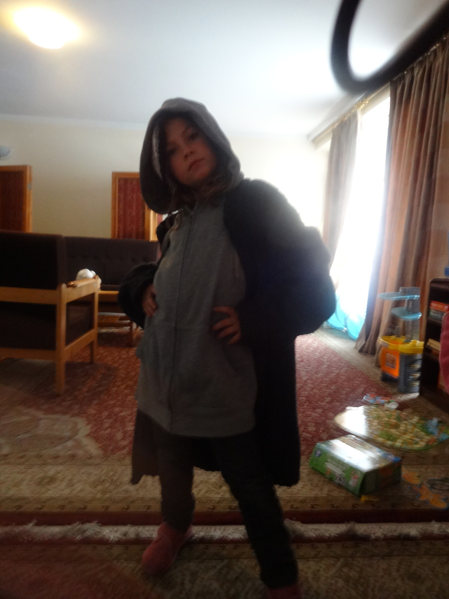Ä Tochter vo Fründe hed grad Freud ka a mine Chleider :-) Aber so schlof ich würkli. Natürlich inklusive Chappe und teilwis au mit Händsche. Goht ganz guet. Ha gmerkt dases eigentlich recht unwichtig isch zHeize i dä Nacht. Uf jede Fall alles über 10° isch würkli Luxus :-).
Fasch jedes Huus i minere Bonzeumgebig hed sogenannti "Tschaukidars" ("Tschauki" = Stuehl, "dar"=haben). Die sind eifach do zum verschiedeni Ufgobe zerledige wo sHuus agoht, so tüend die zum Bispiel Bettler abwimmle und am Huus luege. Sie sind nid mega wichtig, aber mä hed sie eifach miteme normale Huus, wil das Arbet git. Als Usländer isches sehr unaständig nid Arbet zgäh. Die Usländer woni do kenne glernt ha läbäd eigentlich ziemli alli ufeme sehr tüfe Lebensstandard, aber glich händs Agstellti.
Üsi "Tschaukidars" bim Schichtwechsel:
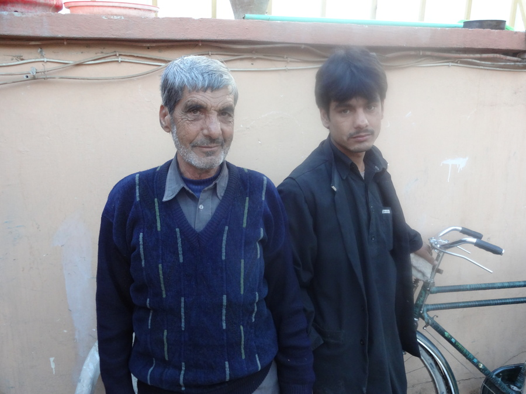Bewegigsfreiheit
d'Tschaukidars erlediget au ganz chlini Sache wie mir Brot zhole. Das tönt jetzt chli komisch, aber ich ha bis jetzt no kei Bewegigsfreiheit. So wird ich immer am Morge vomene Fahrer abgholt is Büro brocht und bi eigentlich nie "frei". Ich werd schono freier chönne umälaufe, aber das goht no 1-2 Wuche. d'NGOs do sind sehr vorsichtig. Ich werde demnöchscht mol no was zu Sicherheit schriebe. Ich ha recht viel Vorschrifte woni usnahmswis au mol ihalte, wili mer selber mega unsicher vorcho wür, z.B. am Markt wili d'Sproch nid chan.
Fahrer isch do au än Job. Sogar eher än guete. Die Type versueched möglichst schnell vorwärts zcho uf ganz üble Strosse. Ab und zue würkli nur Schrittempo möglich (Vor üsem Büro):
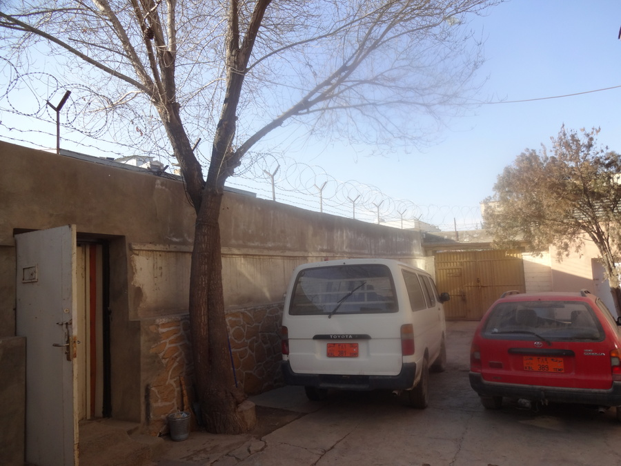Naja drum no paar Bilder usem Auto:
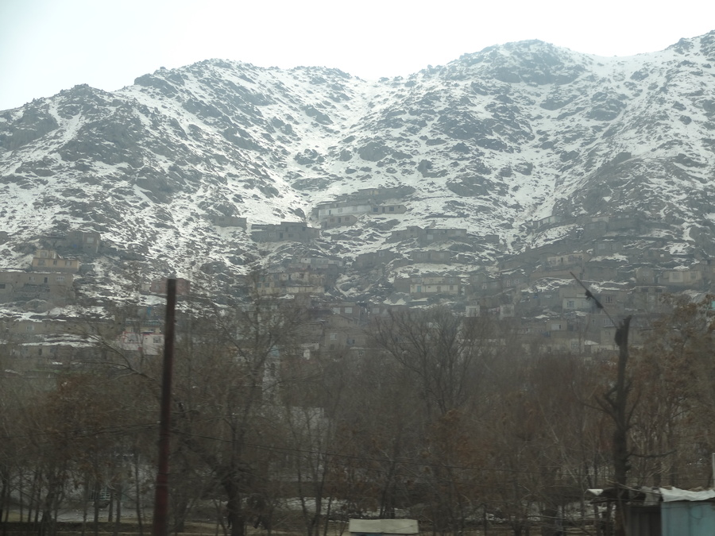Kabul lit mitte i dä Berge (1800 m. ü. M.) und wil Kabul so gross isch händs halt dä Berg berguf baue. Obe wohned nur di sehr arme Lüüt, wils dötte kei flüssend Wasser, etc. meh git (teilwis baued die 200m+ dä Berg berguf).
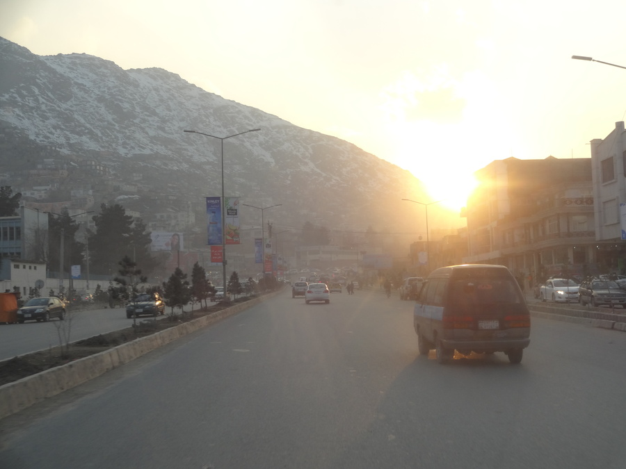Äs isch recht chalt vielfach, drum verschleieret sich au Männer sehr gern mol.
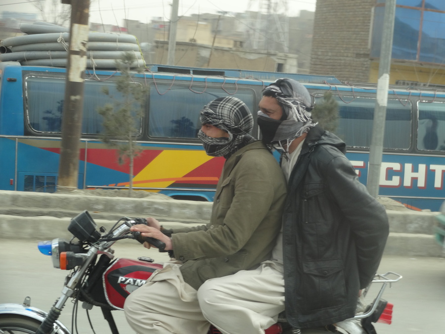Ich ha scho 4 Männer uf somene Motorrad gseh, aber leider nüm vord Kamera becho.
Arbeit
Üses Büro lit im gliche Quartier wie dWohnig und hed recht typischi Sicherheitsstandards für usländischi Büros.
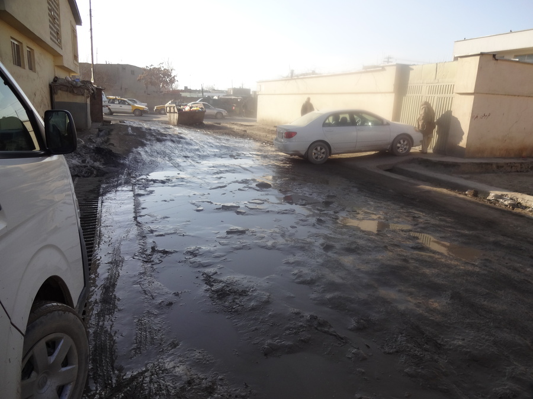Notürli hani au scho agfange schaffe. Ich bi chli Sache am programmiere und glichzitig di afghanische Agstellte vom Windows wegzlocke. Sie händ natürli scho äs Ubuntu installiert :-). Die 8 Afghaner (und ein Ami) sind würkli sehr umgänglichi Lüt und ich werde sicher no einiges a Spass ha mitne (Sie händ mich z.B. zumne Volleyballgame usägforderet :-)).
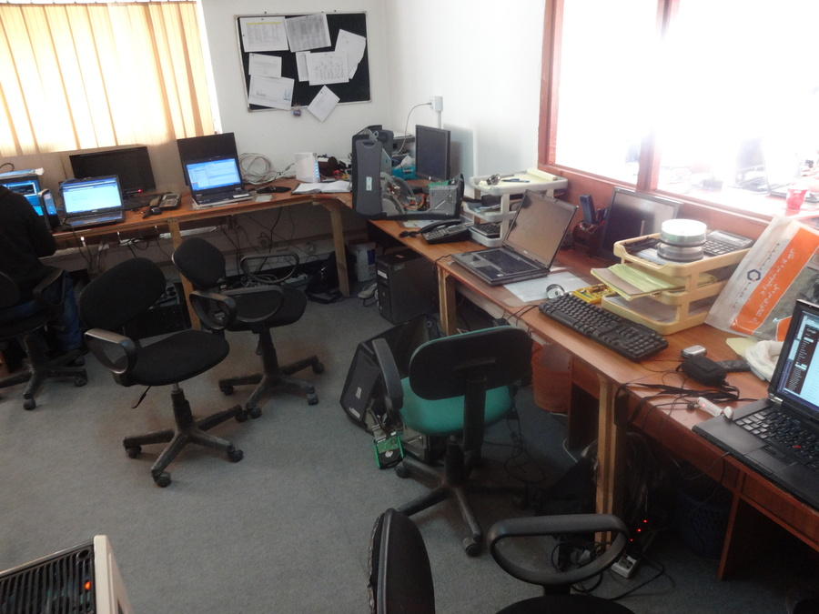Usserdem händs mir au scho di erschte Wörter "Dari" (Afghanisch) bibrocht und ich ha mit dä Sprochschuel agfange. Ziemli hart so ä völlig neui Sproch. Jede Tag 2h.
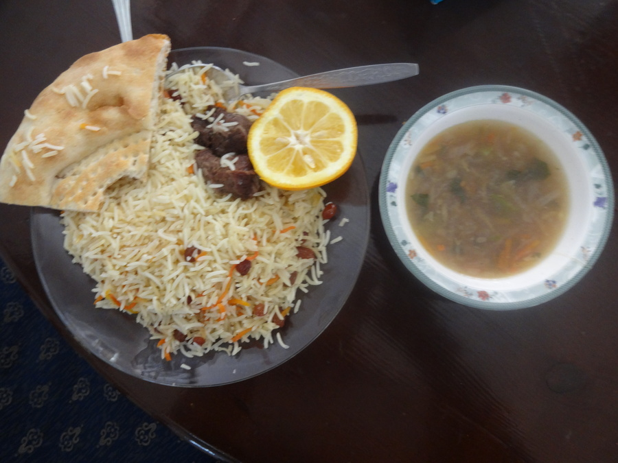Äs git immer afghanischs Ässä am Mittag im Büro. Isch würkli sehr guet. Das obige Menü isch aber was vom schlechtere gsi. Äs heisst Palau. Sus gits viel Riis und immer däzue "Nan" - afghanischs Brot.